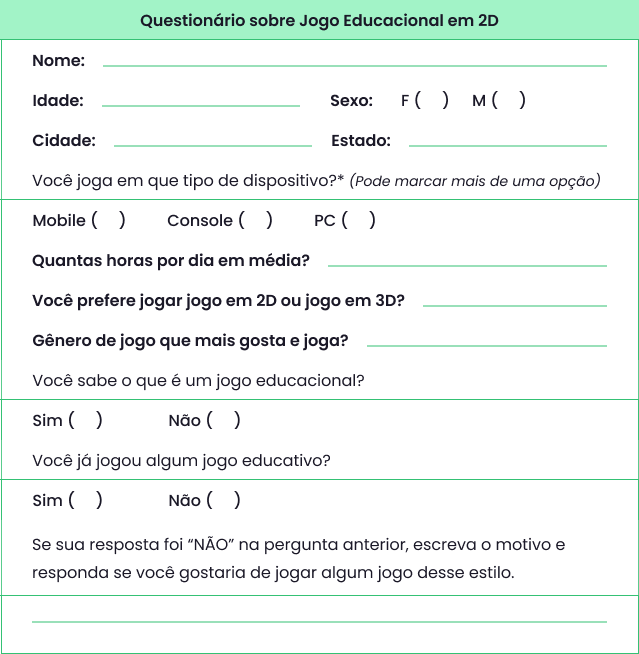

Definir os requisitos funcionais e não funcionais do sistema de jogos demandados pela aplicação.
Vamos iniciar os estudos!
PlayQuais os principais benefícios que Luana terá ao utilizar técnicas para o levantamento de demandas no seu novo projeto?
No desenvolvimento de jogos digitais, o levantamento do público-alvo é extremamente importante, pois é a partir dos resultados obtidos que serão utilizadas outras técnicas de elicitação de requisitos e gerar no final do processo, um documento de validação de requisitos.
Para traçar o perfil de um público-alvo, várias pesquisas são realizadas envolvendo fatores que vão desde os comportamentais como dados demográficos . Esses dados são utilizados para indicar quais as características comuns entre essas pessoas e ter um melhor direcionamento do foco do jogo.
Depois que o público-alvo é obtido e definido, parte-se para as demais etapas de levantamento de requisitos.
O brainstorm (interpretado como chuva de ideias em portugues) é uma técnica de elicitação de requisitos que é muito eficiente para grupos desenvolverem ideias criativas. Além de criar novas ideias, motiva a equipe envolvida inserindo os membros em uma discussão geral.
O Brainstorm foi criado em 1948 pelo publicitário Alex Osborn, e mesmo com o passar dos anos continua atual. Segundo ele, "O objetivo do brainstorm consiste em uma tempestade de ideias e perspectivas com o intuito de chegar ao melhor resultado.
A técnica é utilizada normalmente em reuniões permitindo o compartilhamento de ideias, soluções e feedbacks de grande valor para o projeto que será desenvolvido, além de melhorar a comunicação de toda a equipe, que geralmente começa a se expressar de maneira mais clara e objetiva.

O brainstorm é realizado em duas fases:
A técnica de brainstorm leva a uma melhor compreensão do problema para todos e um sentimento de que todos cooperaram para atingir o objetivo (MENDONÇA, 2012).
Vantagens em utilizar essa técnica:
Desvantagens em utilizar a técnica:
O brainstorming é uma técnica que valoriza a quantidade de ideias geradas, as pessoas tendem a se sentir mais à vontade para propor soluções mesmo que não sejam perfeitas, o que pode reduzir o medo de errar e estimular a criatividade.
São perguntas organizadas com o objetivo de levantar dados para uma pesquisa ou estudo, cujas respostas são fornecidas pelo informante sem a orientação direta do pesquisador. Os resultados do questionário são obtidos por escrito.
O modelo a seguir mostra um exemplo de questionário de um jogo fictício, para que você possa perceber detalhes necessários de acordo com as especificidades do jogo.
O objetivo dessa técnica é a criação de uma versão inicial, e em geral, parcial do sistema. . Isso é possível, a partir dos feedbacks dos stakeholders, colhidos através de questionários.
O que é bastante útil para clarear os requisitos mal definidos e desenvolver um protótipo o mais breve possível. É importante que as perguntas do questionário sejam bem elaboradas e que sua aplicação seja cuidadosamente planejada, a fim de garantir que os resultados obtidos sejam relevantes e confiáveis. Caso contrário, os dados coletados podem levar a conclusões equivocadas e comprometer o sucesso do projeto.
Destacamos a seguir as vantagens e desvantagens em utilizar essa técnica.
| Vantagens | Desvantagens |
|---|---|
|
|
A técnica de entrevista para levantamento de requisitos é bastante utilizada no desenvolvimento de jogos digitais. Geralmente é utilizada no início do processo de desenvolvimento. Consistindo como o próprio nome sugere, em uma entrevista com stakeholders( interessados finais, usuários, patrocinadores) do projeto. Assista a seguir um vídeo sobre algumas dicas para entrevista.
O objetivo da técnica é levantar e identificar os requisitos do software e as demais necessidades do projeto diretamente junto aos mais interessados. As perguntas que serão realizadas na entrevista podem ser simples( não estruturadas), com um contexto livre e com isso conhecer a realidade do cliente. Como podem ser mais elaboradas(estruturadas) e objetivas buscando assim conhecer as necessidades mais importantes.
A técnica requer prática e bastante atenção aos detalhes, sendo
assim realizada por alguém capacitado. Para se obter sucesso na
entrevista deve-se levar em consideração alguns fatores importantes:
A entrevista deve ser realizada em três fases:
Preparação: o foco é na identificação dos potenciais entrevistados, se será estruturada ou não, como dividir as questões, gravar ou não, o tempo de entrevista, local, e no agendamento da entrevista com os entrevistados.
Condução: foca-se na execução da entrevista, introduzindo a razão da mesma, mantendo o foco na entrevista, fazendo escuta activa.
Confirmação: o foco é na partilha de notas da entrevista para revisão e validação do entrevistado.
Tem como vantagens ser uma técnica simples, permitindo discussão aberta e aos entrevistados exprimirem opiniões de forma privada. Como desvantagens, a entrevista torna-se difícil atingir consenso quando feitas em grupo. Requer comprometimento dos participantes; a documentação da entrevista pode ser complexa e ainda existir o risco não intencional do entrevistador conduzir o resultado da entrevista.
QUESTÃO 1
Avalie se a afirmação a seguir é verdadeira ou falsa.
A técnica de levantamento de requisitos entrevista é uma técnica simples, permite aos entrevistados expressarem opiniões de forma privada.
A etnografia é uma técnica utilizada pela antropologia para coleta de dados. Na engenharia de softwares, é um método utilizado no levantamento de requisitos para o desenvolvimento de um software, como exemplo de um jogo digital.
É uma técnica de observação utilizada para traçar um mapeamento de requisitos implícitos, sejam eles sociais ou organizacionais, refletindo os processos reais onde as pessoas estão envolvidas. Nesta técnica, o responsável se insere no ambiente de trabalho em que o sistema( jogo) será utilizado.
A ideia principal é que o engenheiro de requisitos participe das atividades no papel do usuário e obtenha o conhecimento necessário para gerar os requisitos. A etnografia é muito eficaz para o desenvolvimento de um protótipo, utilizando o levantamento dos requisitos funcionais e não funcionais através da técnica.
Ao realizar uma etnografia para o desenvolvimento de um jogo, um pesquisador pode se inserir no ambiente, observando as atividades e interações dos jogadores em seu contexto real. Isso pode envolver a observação de como os jogadores interagem com o jogo, suas preferências, dificuldades, comportamentos e interações sociais durante o jogo. O pesquisador também pode coletar dados adicionais, como entrevistas e anotações de campo, para obter uma compreensão mais profunda do contexto de uso do jogo.
Investigar comunidades online de jogadores, como fóruns, grupos de redes sociais ou plataformas de streaming de jogos é um bom exemplo disso, pois assim pode compreender as discussões, opiniões e feedback dos jogadores sobre o jogo. Isso pode fornecer informações valiosas sobre os sentimentos, preferências e expectativas dos jogadores em relação ao jogo, bem como identificar problemas ou pontos de melhoria.
Através da etnografia, os desenvolvedores de software podem obter insights valiosos sobre as necessidades e expectativas dos usuários em relação ao jogo, o que pode ajudar a identificar problemas e oportunidades de melhorias no design e na usabilidade do jogo. Essa abordagem centrada no usuário pode resultar em um jogo mais bem adaptado às necessidades e preferências dos jogadores, levando a uma experiência de jogo mais satisfatória.
A técnica de workshop de requisitos é uma reunião composta por alguns analistas e um público estratégico chamado de stakeholders, que estão interessados no jogo que será produzido. A partir dessa reunião obtém-se um conjunto de requisitos bem definidos.

O workshop é utilizado para mobilizar o trabalho em equipe, onde os interessados esclarecem e detalham suas necessidades e funcionalidades. Promovendo as discussões entre os participantes e obtendo um processo de negociação que é mediado por um facilitador.
A reunião deve haver uma pauta, dia agendado, horário de início e de término e a documentação do workshop. As informações levantadas serão utilizadas para a produção de uma série de requisitos para o sistema.
Durante a reunião, o facilitador é responsável por conduzir as discussões e garantir que todas as partes tenham a oportunidade de se expressar. É importante que haja uma pauta pré-definida para que as discussões sejam organizadas e direcionadas para os objetivos do workshop.
Ao final do workshop, a equipe de desenvolvimento terá uma lista de requisitos bem definidos e documentados, que serão utilizados para a produção do sistema. Esses requisitos servirão como base para a equipe de desenvolvimento projetar, construir e testar o sistema de acordo com as expectativas dos stakeholders.
QUESTÃO 2
Avalie se a afirmação a seguir é verdadeira ou falsa.
Não é necessário ter uma pauta pré-definida para o workshop de requisitos. Pois o facilitador é responsável por conduzir as discussões e garantir que todas as partes tenham a oportunidade de se expressar.
A prototipação é uma etapa fundamental no planejamento de jogos, pois oferece uma série de benefícios importantes. Algumas razões pelas quais a prototipação é essencial no desenvolvimento de jogos são: testar conceitos e ideias, identificar problemas e fazer ajustes, comunicar e alinhar expectativas, estimular a criatividade e inovação entre outras.
O usuário deve ser lembrado que os protótipos são apenas rascunhos de telas de interface do usuário, sem código e o software ainda não especificado e codificado. Para Sommerville (2007, p.271), "O protótipo é a primeira versão de sistemas de software usados para demonstrar conceitos e assim aprender mais sobre o problema e suas soluções possíveis.”.
Segundo Batista e Pontedeiro (2004), essa técnica reduz o risco de falhas no desenvolvimento de softwares porque é uma tarefa que permite renderização. A funcionalidade do sistema fica imediatamente disponível para o usuário, resultando no fornecimento de informações relacionadas à construção do produto final.
Sendo assim, o protótipo cumpre a função como instrumento de teste/avaliação.


QUESTÃO 3
Escolha a opção CORRETA que valida a sentença a seguir:
A técnica de _____________________ pode ser usada para gerar ideias criativas e soluções inovadoras para um problema específico. Onde todos são encorajados a compartilhar livremente suas ideias sem julgamento.
Muito bem!
Nesta unidade você conheceu várias técnicas capazes de gerar ideias inovadoras. O workshop, por exemplo, é uma técnica de dinâmica de grupo para colaboração e tomada de decisões em equipe. A entrevista pode ser utilizada para coletar informações e opiniões de jogadores e especialistas, enquanto o questionário pode ser usado para coletar dados sobre as preferências dos jogadores.
O brainstorming é uma técnica popular para geração de ideias criativas e inovadoras, e a etnografia pode ser utilizada para observação e interação com jogadores em seu ambiente natural de jogo. A prototipagem é uma técnica importante para testar e refinar o jogo antes de seu lançamento, permitindo ajustes e melhorias com base no feedback obtido.
Utilizar essas técnicas de forma eficaz pode ajudar na criação de jogos mais atraentes e envolventes para os jogadores, com uma jogabilidade e design mais refinados. Cada técnica tem seu papel e é importante escolher a abordagem adequada para o objetivo pretendido no desenvolvimento do jogo.